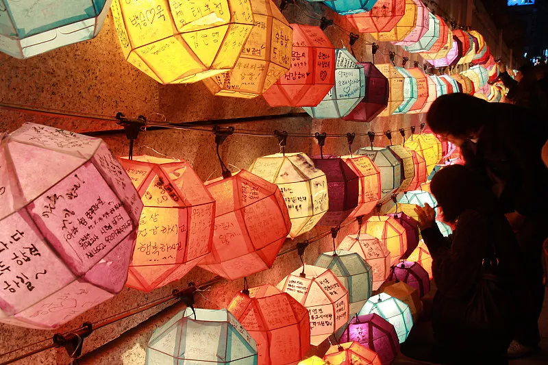
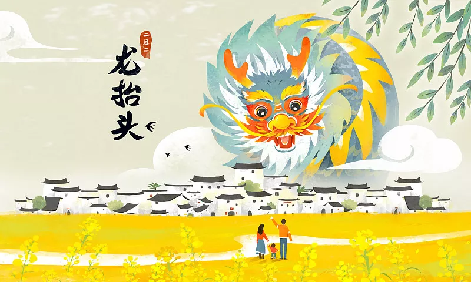
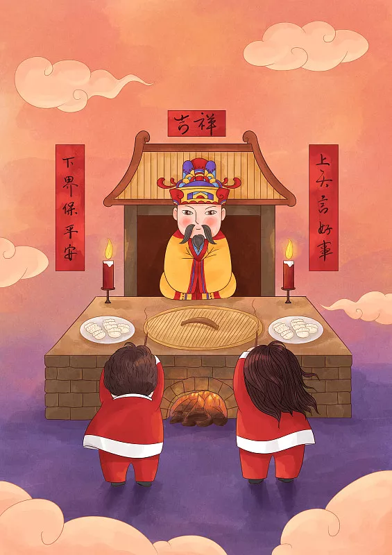
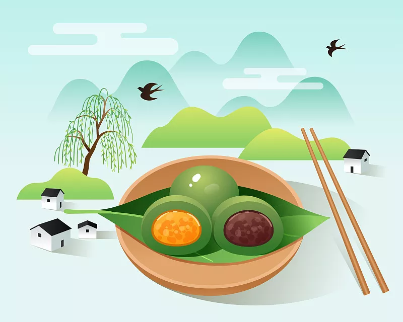

传统节日的形成过程，是中华民族历史文化沉淀凝聚的过程。《春秋命历序》：“天地开辟，万物浑浑，无知无识；阴阳所凭…日月五纬俱起牵牛；四万五千年，日月五纬一轮转；…定天之象，法地之仪，作干支以定日月度。” 上古干支历法的制定为节日产生提供了前决条件。在历史发展演变中，朝代更迭，古代历法变动极大，前后共出现过102个历，有些“传统节日”的古今具体日期其实并不相同。
春节，即农历新年，俗称新春、新岁、岁旦等，口头上又称过年、过大年。春节历史悠久，由上古时代岁首祈岁祭祀演变而来。万物本乎天、人本乎祖，祈岁祭祀、敬天法祖，报本反始也。春节的起源蕴含着深邃的文化内涵，在传承发展中承载了丰厚的历史文化底蕴。在早期观象授时时代，依据斗转星移定岁时，“斗柄回寅”为岁首。
在春节期间，全国各地均有举行各种庆贺新春活动，带有浓郁的各地域特色。这些活动以除旧布新、驱邪攘灾、拜神祭祖、纳福祈年为主要内容，形式丰富多彩，凝聚着中华传统文化精华。

元宵节，又称灯节、小正月、元夕、上元节，为每年农历正月十五日，是中国的传统节日之一。正月是农历的元月，古人称“夜”为“宵”，正月十五日是一年中第一个月圆之夜，所以称正月十五为“元宵节”。
由于元宵有张灯、看灯的习俗，民间又习称为“灯节”。元宵节主要有赏花灯、吃汤圆、猜灯谜、放烟花等一系列传统民俗活动。此外，不少地方元宵节还增加了耍龙灯、耍狮子、踩高跷、划旱船、扭秧歌、打太平鼓等民俗表演。

龙抬头（农历二月二日），又称春耕节、农事节、青龙节、春龙节等，是中国民间传统节日。“龙”指的是二十八宿中的东方苍龙七宿星象，每岁仲春卯月（斗指正东）之初，“龙角星”就从东方地平线上升起，故称“龙抬头”。
龙是神话里生活于大海中的神异生物，司掌行云布雨，常用来象征祥瑞。自古以来，人们在仲春“龙抬头”这天敬龙庆贺，以祈龙消灾赐福、风调雨顺、五谷丰登。农历“二月二”，既是“龙抬头节”，又是土地神诞辰“社日节”。由于节期重叠，南方部分地区“二月二”既有龙抬头节习俗又有祭社习俗，如在浙江、福建、广东、广西等地区，“二月二”（古时为立春后第五个戊日）
多以祭社（土地神）为主，祭龙多在“龙飞天”的端阳。二月二龙抬头节日据传说是上古人物的生日，应为附会，因上古不庆生，恐遭人厌胜，真实诞日情况绝不泄露。

社日节，又称土地诞（农历二月初二），是古老的中国传统节日，社日分为春社和秋社。古时代的社日节期依据干支历法来定，后来因历法变动改用阴历定节期。春社按立春后第五个戊日（戊，五行属土）推算，一般在农历二月初二前后，秋社按立秋后第五个戊日，约新谷登场的农历八月。古代把土地神和祭祀土地神的地方都叫"社"，按照我国民间的习俗，每到播种或收获的季节，农民们都要立社祭祀，祈求或酬报土地神。
上巳（sì）节，俗称三月三，是汉民族的传统节日，该节日在汉代以前定为三月上旬的巳日，后来固定在夏历三月初三。上巳节的历史由来已久，在上古时代上巳已成为大规模的民俗节日，春和景明，人们走出家门，集于水边，举行清除不祥的祓除仪式。
上巳节是古代举行“祓除畔浴”活动中最重要的节日，人们结伴去水边沐浴，称为“祓禊”，此后又增加了祭祀宴饮、曲水流觞、郊外游春等内容。
上古时代以“干支”纪日，三月上旬的第一个巳日，谓之“上巳”。魏晋以后，上巳节改为阴历三月初三，故又称“重三”或“三月三”。宋代以后，三月三上巳节在北方销声匿迹，不见于文献记载；虽宋朝以后“三月三”上巳节不见于文献记载，但在南方的西南部分地区依旧流传。

寒食为旧俗中流行于我国北方的一个节日，古时日期并不固定，有说在清明节前一天，也有另一种说法是清明前两天。现大多和清明节过。
寒食节，亦称“禁烟节”、“冷节”、“百五节”。在这一日，禁烟火，只吃冷食，所以叫做“寒食节”。寒食节是源传于我国北方古代较早的节日，寒食节初为节时，禁烟火、只吃冷食，在后世的发展中逐渐增加了祭扫、秋千、蹴鞠、牵勾、斗鸡等风俗。由于北方寒冷，春三月气温上升正值改火的时节，人们在新火未到之时，要禁止生火。
清明节，又称踏青节、行清节、三月节、祭祖节等，节期在仲春与暮春之交。清明节源自上古时代的祖先信仰与春祭礼俗，兼具自然与人文两大内涵，既是自然节气点，也是传统节日。清明节是传统的重大春祭节日，扫墓祭祀、缅怀祖先，是中华民族数千年以来的优良传统，不仅有利于弘扬孝道亲情、唤醒家族共同记忆，还可促进家族成员乃至民族的凝聚力和认同感。
端午节，又称端阳节、重午节、龙舟节、正阳节、浴兰节、天医节、药草节、天中节等。古人历来崇尚中、正之道，“端午”的“端”字本义为“正”，“午”为“中”。“端午”，“中正”也，这天午时则为正中之正。端午节源自天象崇拜，由上古时代祭龙演变而来。端午节的起源涵盖了古老星象文化、人文哲学等方面内容，蕴含着深邃丰厚的文化内涵，在传承发展中杂糅了多种民俗为一体，节俗内容丰富。 端午节是龙的节日，龙及龙舟文化始终贯穿在端午节的传承历史中。仲夏端午，飞龙在天，龙气旺盛，百邪皆避。端午节的节俗以祈福纳祥、压邪攘灾等形式展开，内容丰富多彩，热闹喜庆。祈福纳祥类习俗主要有扒龙舟、祭龙、放纸龙等，压邪攘灾类习俗主要有挂艾草、浸龙舟水、洗草药水、拴五色彩线等，节庆食品主要有粽子、五黄等。在传统节日中，论民俗之繁多复杂，或只有端午节能和春节可比拟。端午节有着丰富多彩的节庆活动，与春节一样，其习俗蕴含着祈福、消灾等文化内涵，寄托了人们一种迎祥纳福、辟邪除灾的美好愿望。
七夕节，又称七巧节、七姐节、女儿节、乞巧节、七娘会、巧夕、牛公牛婆日、双七等，是中国民间的传统节日，为传统意义上的七姐诞，因拜祭活动在七月七日晩上举行，故名“七夕”。拜七姐，祈福许愿、乞求巧艺、坐看牵牛织女星、祈祷姻缘、储七夕水等，是七夕的传统习俗。 经历史发展，七夕被赋予了“牛郎织女”的美丽爱情传说，因被赋予了与爱情有关的内涵，使其成为了象征爱情的节日，从而被认为是中国最具浪漫色彩的传统节日，在当代更是产生了“中国情人节”的文化含义。
中元节，是道教名称，民间世俗称为七月半、七月十四、祭祖节，佛教称为盂兰盆节。节日习俗主要有祭祖、放河灯、祀亡魂、焚纸锭、祭祀土地等。它的产生可追溯到上古时代的祖灵崇拜以及相关时祭。七月乃吉祥月、孝亲月，七月半是民间初秋庆贺丰收、酬谢大地的节日，有若干农作物成熟，民间按例要祀祖，用新稻米等祭供，向祖先报告秋成。该节是追怀先人的一种文化传统节日，其文化核心是敬祖尽孝。 七月十四民间祭祖节、道教中元节与佛教盂兰盆节，是分属于民间俗信、道教与佛教的说法，三者呈并列关系，而非一个节日的三个不同名称。自道教兴起后，“三元说”的“中元”二字，在唐中后期正式被固定为节名，并将节期设在七月十五日。因此北方地区多在七月十五日过节，南方部分地区仍然保持着七月十四日祭祖的传统。
中秋节，又称月夕、秋节、仲秋节、拜月节、团圆节等，是中国民间的传统节日。中秋节源自天象崇拜，由上古时代秋夕祭月演变而来。中秋节自古便有祭月、赏月、吃月饼、玩花灯、赏桂花、饮桂花酒等民俗，流传经久不息。 中秋节起源于上古时代，定型于唐朝初年，盛行于宋朝。至明清时，中秋已与年节齐名，成为中国民间的主要节日之一。中秋节以月之圆兆人之团圆，为寄托思念故乡，思念亲人之情，祈盼丰收、幸福，成为丰富多彩、弥足珍贵的文化遗产。
重阳节，为每年的农历九月初九日，是中国民间的传统节日。 《易经》中把“九”定为阳数，“九九”两阳数相重，故曰“重阳”；因日与月皆逢九，故又称为“重九”。 九九归真，一元肇始，古人认为九九重阳是吉祥的日子。古时民间在重阳节有登高祈福、秋游赏菊、佩插茱萸、拜神祭祖及饮宴求寿等习俗。又添加了敬老等内涵，于重阳之日享宴高会，感恩敬老。登高赏秋与感恩敬老是当今重阳节日活动的两大重要主题。据现存史料及考证， 重阳节的源头，可追溯到上古时代。
寒衣节，阴历十月初一，又称“十月朝”、“祭祖节”、“冥阴节”、“鬼头日”等。我国北方地区将寒衣节与每年春季的清明节、七月十五的中元节合称为中国的三大“鬼节”。寒衣节流行于我国北方地区，不少北方人会在这一天祭扫，纪念仙逝亲人，谓之送寒衣。同时，这一天也标志着严冬的到来，所以也是为父母爱人等所关心的人送御寒衣物的日子。十月朔，秦岁首，送寒衣。
下元节的来历与道教有关。道家有三官：天官、地官、水官，谓上元九炁赐福天官，中元七炁赦罪地官，下元五炁解厄水官。三官的诞生日分别为农历的正月十五天官赐福、七月十五地官赦罪、十月十五水官解厄，这三天被称为“上元节”、“中元节”、“下元节”。下元节，就是水官解厄旸谷帝君解厄之辰，俗谓下元日。
冬至，又称日南至、冬节、亚岁等，兼具自然与人文两大内涵，既是二十四节气中一个重要的节气，也是中国民间的传统祭祖节日。冬至是四时八节之一，被视为冬季的大节日，在古代民间有“冬至大如年”的讲法。冬至习俗因地域不同而又存在着习俗内容或细节上的差异。在中国南方地区，有冬至祭祖、宴饮的习俗。在中国北方地区，每年冬至日有吃饺子的习俗。